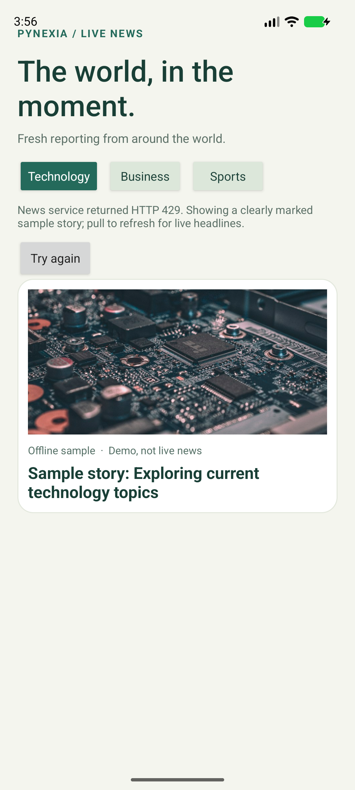

Native Android · Java + XML
News App
The world, in the moment.
A live Android news reader for technology, business and sports, with swipe refresh, image cards and source details.
Project showcase · Android 8.0+ · Evaluation build.

01 / Implementation
Built around the assignment
Week 3: REST APIs, JSON parsing, asynchronous networking and native Android screens.
Read the bilingual report (PDF)Live REST and JSON
Retrofit queries GDELT DOC for recent technology, business or sports coverage and parses the returned article list.
News feed
RecyclerView cards show headline, source domain, date and a Glide-loaded image. Swipe down or switch category to refresh.
Story details
Select a headline for a detail screen with source and date, then open the publisher’s original article.
02 / In the app
Actual Android screen

03 / Try it
Review walkthrough
- Select Technology, Business or Sports.
- Pull down to refresh the live feed.
- Tap an article card to view its source and publication date.
- Open the publisher page for the full article.
Build status
Debug build completed
Automated tests were not run. See build and lint records in the repository.
شرح التمرين
يعرض التطبيق عناوين الأخبار الحديثة ضمن التقنية والأعمال والرياضة. يجلب البيانات بصيغة JSON عبر Retrofit، ويعرض الصورة والعنوان والمصدر في RecyclerView. حدّث القائمة بالسحب للأسفل، وافتح تفاصيل الخبر ثم المصدر الأصلي لقراءة النص الكامل.
04 / Submission kit
Files for your project form
Repository URL: https://github.com/ENGEyad/pynexia-week3-news
Hosted URL: https://engeyad.github.io/pynexia-week3-news/
Attach File / Archive: News-App.zip (771 characters of notes included below in the report)
Implementation notes
Native Android News App built with Java, XML and Retrofit. Loads recent technology, business or sports headlines from the GDELT DOC JSON API. Swipe to refresh. RecyclerView displays headline, publisher domain, date and image loaded with Glide. Select an item for story details and open the original publisher page. Run the news module in Android Studio with JDK 17/21 and Android SDK 35 on Android 8.0/API 26 or later. Internet access is needed. Build: assembleDebug passed. Automated tests were not run. Lint findings are included in the repository and report. Availability, article coverage and images depend on GDELT and external publishers. Full article text remains on the publisher website. Hosted page includes the APK, source archive, report and screenshots.